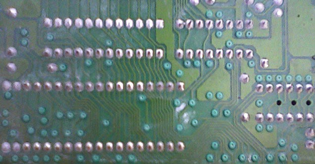
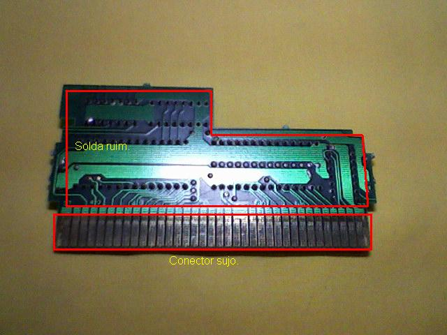
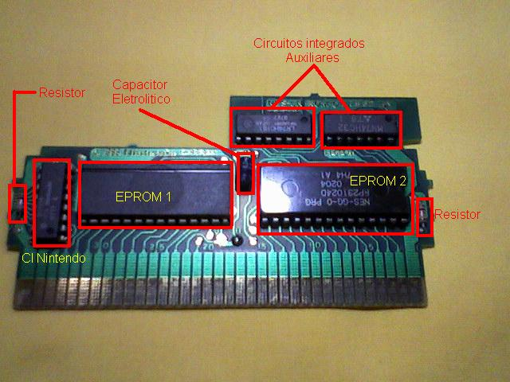
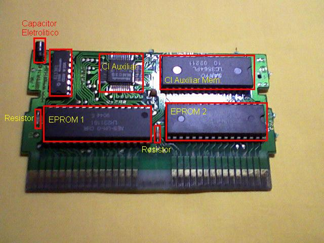

Nes - Como ressucitar um cartucho
:::. Por Dartnes - Esse artigo visa mostrar alguns problemas comuns em cartuchos do NES e possíveis soluções para os mesmos.
_________________________________________________________________________________
Problema: Cartucho não inicia.
Um problema bem comum que impede de um cartucho iniciar, é o acumulo de sujeira nos contatos do cartucho. A primeira ação a se fazer e limpar os contatos com álcool isopropilico, ou uma borracha de lápis daquelas duas cores e testar. Caso não funcione será necessário desmontar o cartucho e verificar se há mofo, solda fria (aquela solda rachada ou danificada), corrosão das trilhas, se há crosta nos contatos, se ha algum componente ou chip de memória EPROM solto ou quebrado e componentes gastos ou queimados.
Se houver mofo
O mofo impede o correto funcionamento do cartucho, fechando pequenos curtos-circuitos causando mau funcionamento ou impedindo o funcionamento. Para solucionar, use uma escova de dentes umedecida com álcool isopropilico, faça leves movimentos circulares por toda a placa afim de remover todo o mofo. Repita o processo umas três ou quatro vezes até a placa ficar completamente limpa de mofo e de se sujeira.

Placa de cartucho com mofo.
Se houver solda fria (solda rachada ou danificada)
Verifique as solda da placa de ambos os lados com uma lente de aumento, verifique solda por solda. Se necessário, re-solde os com problemas e na duvida re-solde toda a placa com cuidado para não fechar curto-circuito nos componentes. Talvez seja necessário retirar a solda velha com o auxilio do sugador e colocar solda nova.

Solda ruim. Precisa de uma ressoldagem completa dos chips e componentes na placa.
Se houver corrosão das trilas
Se quando você inspecionar a placa do cartucho ver trilhas corroídas por oxidação, será necessário refazê-las com uma lamina ou lixa. Raspe por cima da trila corroída para ver onde ela esta partida e com um ferro de soldar e solda, com muita paciência e atenção, encoste o ferro na trilha e em seguida a solda e mova à ponta do ferro de uma ponta a outra da trilha partida ate que fique uma trilha de solda preenchendo a que antes estava partido.
Se nos conectores haver crosta que o álcool não consegue remover
Se mesmo depois de limpar com o álcool isopropilico ou uma borracha de lápis, os conectores continuarem com uma crosta ou não estiverem completamente limpos, será necessário o uso de uma lixa fina ou uma lixa dessas de unha. Lixe com o lado mais suave, devagar e de leve para não remover o cobre da placa, só a crosta que é superficial.
Se após os procedimentos descritos acima o seu cartucho ainda não iniciar, pode-se tentar trocar alguns componentes, por exemplo, capacitores, resistores e diodos; sempre por outro de igual valor ou equivalente.
Primeiro tente trocar os capacitores, troque e teste, depois os diodos e por ultimo os resistores; se não resolver pode ser os chips de EPROM com defeito.
Componentes típicos de um cartucho do NES
Demon Sword

Super Mario Bross 3

Atenção se você não tiver familiarizado com o ferro de solda ou se sentir inseguro para realizar algum procedimento não o faça. Eu já realizei esse procedimento várias vezes em consoles meus e de amigos, e sempre funcionou bem. Por tanto não me responsabilizo por quaisquer danos ocorridos.
Acesse o Trombone e comente sobre essa matéria!


Aqui, vou apresentar a restauração de um controle de SNES que comprei em péssimo estado numa feirinha da minha cidade, e que agora está lindinho funcionando perfeitamente. Confira as dicas, e faça uma restauração você também
Restaurando um controle de PSX
Peguei o mais feinho e judiado dos controles para fazer esse artigo. O coitado estava encardido na parte de cima, e debaixo dele encontrei arranhões nas partes de apoio da mão, e bastante sujeira acumulada nas inscrições. O conector do cabo estava muito arranhado e sujo tambem, o cabo então nem se fala... sujava a mão só de pegar